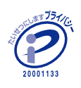

プライバシーポリシー PRIVACY POLICY
個人情報保護（プライバシーポリシー）
当社は「学生の『働く』を応援する」企業として、インターンシップ推進事業や学校公認学校別アルバイト情報Webサイトの運営などの学生キャリア支援事業を通して、地域社会の発展に貢献することを事業目標に役職員一同精励しております。 お客様のプライバシー・個人情報（以下「個人情報」といいます。）を保護、管理することを当社の事業活動を行う上で最重要な事項と位置づけており、 以下のとおり個人情報保護方針を定め、個人情報保護の確実な履行に努める所存です。
記
- 当社は、この方針を一般に公表するとともに、当社の業務の従業者（役職員、パートタイマー、派遣労働者、顧問、委託契約に基づき当社の業務を行う者を含む）、その他関係者に周知徹底させて実行し、維持・改善します。
- 当社は、個人情報を取得する場合にはあらかじめ取得目的を定めた上で、取得目的に必要な範囲に限定して、適法かつ公正な手段によって個人情報を取得します。また、目的を超えた個人情報の利用を行わず、そのための措置を講じます。
- 当社は、個人情報の利用は、取得目的の範囲内で、具体的な業務に応じ権限を与えられた者のみが、業務の遂行上必要な限りにおいて行います。
- 当社は、法令に定める場合のほか、本人の同意を得た上で、個人情報を第三者及び関係会社へ提供する場合があります。
- 当社は、JIS Q 15001をはじめ、個人情報の取扱いに関する法令、国が定める指針（ガイドライン含む）その他の規範を遵守します。
- 当社は、保有する個人情報の最新性・正確性を維持するように努めます。
- 当社は、個人情報の紛失、破壊、改ざん、及び漏えいなどを予防するため、適切な情報セキュリティ対策を講じます。また、予測しえない事故が生じたときは、緊急連絡網等の社内体制及び対策手順に従い、直ちに原因を解明すると共に、適切な是正措置を講じます。
- 当社は、個人情報を第三者との間で共同利用したり、業務を委託するために個人情報を第三者に委託する場合、当該第三者について調査し必要な契約を締結し（契約の履行確認を含みます）、その他法令上必要な措置を講じます。
- 当社は、本人（個人情報の本人様）が自己の個人情報について、利用目的の通知、開示、訂正、追加・削除、利用停止、第三者提供停止、消去等の権利を有していることを確認し、本人からのこれらの要求に対して異議なく応じます。このための受付窓口を設置して公表します。
- 苦情・相談は、下記お問い合わせ先で誠意をもって適切な対応をいたします。
- 当社は、社会情勢、技術の発展、環境の変化に対応して、常に最善の個人情報保護を行うために、個人情報の取り扱いと個人情報保護のマネジメントシステムについて、継続的な見直しと改善を行います。
代表取締役社長 長町 基志
平成17年 3月15日 制定
平成27年12月15日 改定
大阪市淀川区西中島5-4-20中央ビル2F
株式会社 ナジック・アイ・サポート
お問合せ先 経営企画室
電話 06-4806-0551
開示などの手続きについて
個人情報の開示、訂正等、 利用の停止等については、開示などの手続きについてをご覧ください。
詳しくは、開示などの手続きについてをご覧下さい。
開示などの手付づきについて
プライバシーマークについて
株式会社ナジック・アイ・サポートは「プライバシーマーク」使用の許諾事業者として認定されています。
「プライバシーマーク」制度とは･･･ 個人情報の取扱いについて適切な保護措置を講ずる体制を整備している事業者であることを第三者機関より評価・認定され、 事業活動に関してその旨を示すプライバシーマークの使用を認める制度です。